Greybox Fuzzing with Grammars#
In this chapter, we introduce important extensions to our syntactic fuzzing techniques, all leveraging syntactic parts of existing inputs.
We show how to leverage dictionaries of input fragments during fuzzing. The idea is to integrate such dictionaries into a mutator, which would then inject these fragments (typically keywords and other items of importance) into population.
We show how to combine parsing and fuzzing with grammars. This allows mutating existing inputs while preserving syntactical correctness, and to reuse fragments from existing inputs while generating new ones. The combination of language-based parsing and generating, as demonstrated in this chapter, has been highly successful in practice: The LangFuzz fuzzer for JavaScript has found more than 2,600 bugs in JavaScript interpreters this way.
In the previous chapters, we have used grammars in a black-box manner – that is, we have used them to generate inputs regardless of the program being tested. In this chapter, we introduce mutational greybox fuzzing with grammars: Techniques that make use of feedback from the program under test to guide test generations towards specific goals. As in lexical greybox fuzzing, this feedback is mostly coverage, allowing us to direct grammar-based testing towards uncovered code parts. This part is inspired by the AFLSmart fuzzer, which combines parsing and mutational fuzzing.
from bookutils import YouTubeVideo
YouTubeVideo('hSGzcjUj7Vs')
Prerequisites
We build on several concepts from the chapter on greybox fuzzing (without grammars).
As the title suggests, you should know how to fuzz with grammars from the chapter on grammars.
Synopsis#
To use the code provided in this chapter, write
>>> from fuzzingbook.GreyboxGrammarFuzzer import <identifier>
and then make use of the following features.
This chapter introduces advanced methods for language-based grey-box fuzzing inspired by the LangFuzz and AFLSmart fuzzers.
Fuzzing with Dictionaries#
Rather than mutating strings randomly, the DictMutator class allows inserting tokens from a dictionary, thus increasing fuzzer performance. The dictionary comes as a list of strings, out of which random elements are picked and inserted - in addition to the given mutations such as deleting or inserting individual bytes.
>>> dict_mutator = DictMutator(["<a>", "</a>", "<a/>", "='a'"])
>>> seeds = ["<html><head><title>Hello</title></head><body>World<br/></body></html>"]
>>> for i in range(10):
>>> print(dict_mutator.mutate(seeds[0]))
<html><head><title>Hello</title></head><body>World<br/>>/body></html>
<html><head><title>Hello</title></head><body>World<br/></body></ht7ml>
<html><head><title>Hello</title></hgad><body>World<br/></body></html>
<html><head><title>Hello</title></head><body>World<br/<a/>></body></html>
<html><head><title>Hello</title></head><body>World<br+></body></html>
<html><head><title>Hello</title></qhead><body>World<br/></body></html>
<html><head><title>Hello</title></head><body>World<br='a'/></body></html>
<html><head><title>Hello</title></head><body>Wormd<br/></body></html>
<html><head><title>Hello</title></head><body>Wyorld<br/></body></html>
<html><head><title>Hello<</a>/title></head><body>World<br/></body></html>
This DictMutator can be used as an argument to GreyboxFuzzer:
>>> runner = FunctionCoverageRunner(my_parser)
>>> dict_fuzzer = GreyboxFuzzer(seeds, dict_mutator, PowerSchedule())
>>> dict_fuzzer_outcome = dict_fuzzer.runs(runner, trials=5)

Fuzzing with Input Fragments#
The LangFuzzer class introduces a language-aware fuzzer that can recombine fragments from existing inputs – inspired by the highly effective LangFuzz fuzzer. At its core is a FragmentMutator class that that takes a parser as argument:
>>> parser = EarleyParser(XML_GRAMMAR, tokens=XML_TOKENS)
>>> mutator = FragmentMutator(parser)
The fuzzer itself is initialized with a list of seeds, the above FragmentMutator, and a power schedule:
>>> seeds = ["<html><head><title>Hello</title></head><body>World<br/></body></html>"]
>>> schedule = PowerSchedule()
>>> lang_fuzzer = LangFuzzer(seeds, mutator, schedule)
>>> for i in range(10):
>>> print(lang_fuzzer.fuzz())
<html><head><title>Hello</title></head><body>World<br/></body></html>
<html><head><title>Hello</title></head>World<br/></body></html>
<html>World<body>World<br/></body></html>
<html><title>Hello</title></head><title>World<br/></body></html>
<html><head><title><head>World</head></title></head>World<br/></body></html>
<html><body>World<br/></body><body>World<br/></body></html>
Exception ignored in: <bound method IPythonKernel._clean_thread_parent_frames of <ipykernel.ipkernel.IPythonKernel object at 0x103912720>>
Traceback (most recent call last):
File "/Users/zeller/.local/lib/python3.12/site-packages/ipykernel/ipkernel.py", line 775, in _clean_thread_parent_frames
def _clean_thread_parent_frames(
File "Timeout.ipynb", line 43, in timeout_handler
}
TimeoutError:
<html><body>WorldHello</body>
Exception ignored in: <bound method IPythonKernel._clean_thread_parent_frames of <ipykernel.ipkernel.IPythonKernel object at 0x103912720>>
Traceback (most recent call last):
File "/Users/zeller/.local/lib/python3.12/site-packages/ipykernel/ipkernel.py", line 775, in _clean_thread_parent_frames
def _clean_thread_parent_frames(
File "Timeout.ipynb", line 43, in timeout_handler
}
TimeoutError:
<html><head><title>Hello</title></head><body><head><head>World</head></title></head><body>World<br/></body><br/></body></html>
<html><head><title></title></head><body>World<br/></body></html>
<html><head><title>Hello</title></head><body><head><title><head>World</head></title></head><body>World<br/></body><br/><br/></body></html>

Fuzzing with Input Regions#
The GreyboxGrammarFuzzer class uses two mutators:
a tree mutator (a
RegionMutatorobject) that can parse existing strings to identify regions in that string to be swapped or deleted.a byte mutator to apply bit- and character-level mutations.
>>> tree_mutator = RegionMutator(parser)
>>> byte_mutator = Mutator()
The schedule for the GreyboxGrammarFuzzer class can be a regular PowerSchedule object. However, a more sophisticated schedule is provided by AFLSmartSchedule, which assigns more energy to seeds that have a higher degree of validity.
>>> schedule = AFLSmartSchedule(parser)
The GreyboxGrammarFuzzer constructor takes a set of seeds as well as the two mutators and the schedule:
>>> aflsmart_fuzzer = GreyboxGrammarFuzzer(seeds, byte_mutator, tree_mutator, schedule)
As it relies on code coverage, it is typically combined with a FunctionCoverageRunner:
>>> runner = FunctionCoverageRunner(my_parser)
>>> aflsmart_outcome = aflsmart_fuzzer.runs(runner, trials=5)

Background#
First, we recall a few basic ingredients for mutational fuzzers.
Seed. A seed is an input that is used by the fuzzer to generate new inputs by applying a sequence of mutations.
Mutator. A mutator implements a set of mutation operators that applied to an input produce a slightly modified input.
PowerSchedule. A power schedule assigns energy to a seed. A seed with higher energy is fuzzed more often throughout the fuzzing campaign.
AdvancedMutationFuzzer. Our mutational blackbox fuzzer generates inputs by mutating seeds in an initial population of inputs.
GreyboxFuzzer. Our greybox fuzzer dynamically adds inputs to the population of seeds that increased coverage.
FunctionCoverageRunner. Our function coverage runner collects coverage information for the execution of a given Python function.
Let’s try to get a feeling for these concepts.
import bookutils.setup
from typing import List, Set, Dict, Sequence, cast
from Fuzzer import Fuzzer
from GreyboxFuzzer import Mutator, Seed, PowerSchedule
from GreyboxFuzzer import AdvancedMutationFuzzer, GreyboxFuzzer
from MutationFuzzer import FunctionCoverageRunner
The following command applies a mutation to the input “Hello World”.
Mutator().mutate("Hello World")
'Lello World'
The default power schedule assigns energy uniformly across all seeds. Let’s check whether this works.
We choose 10k times from a population of three seeds. As we see in the hits counter, each seed is chosen about a third of the time.
population = [Seed("A"), Seed("B"), Seed("C")]
schedule = PowerSchedule()
hits = {
"A": 0,
"B": 0,
"C": 0
}
for i in range(10000):
seed = schedule.choose(population)
hits[seed.data] += 1
hits
{'A': 3387, 'B': 3255, 'C': 3358}
Before explaining the function coverage runner, lets import Python’s HTML parser as example…
from html.parser import HTMLParser
… and create a wrapper function that passes each input into a new parser object.
def my_parser(inp: str) -> None:
parser = HTMLParser()
parser.feed(inp)
The FunctionCoverageRunner constructor takes a Python function to execute. The function run() takes an input, passes it on to the Python function, and collects the coverage information for this execution. The function coverage() returns a list of tuples (function name, line number) for each statement that has been covered in the Python function.
runner = FunctionCoverageRunner(my_parser)
runner.run("Hello World")
cov = runner.coverage()
list(cov)[:5] # Print 5 statements covered in HTMLParser
[('my_parser', 3),
('goahead', 163),
('updatepos', 47),
('goahead', 245),
('reset', 100)]
Our greybox fuzzer takes a seed population, mutator, and power schedule. Let’s generate 5000 fuzz inputs starting with an “empty” seed corpus.
import time
import random
n = 5000
seed_input = " " # empty seed
runner = FunctionCoverageRunner(my_parser)
fuzzer = GreyboxFuzzer([seed_input], Mutator(), PowerSchedule())
start = time.time()
fuzzer.runs(runner, trials=n)
end = time.time()
"It took the fuzzer %0.2f seconds to generate and execute %d inputs." % (end - start, n)
'It took the fuzzer 0.98 seconds to generate and execute 5000 inputs.'
"During this fuzzing campaign, we covered %d statements." % len(runner.coverage())
'During this fuzzing campaign, we covered 79 statements.'
Fuzzing with Dictionaries#
To fuzz our HTML parser, it may be useful to inform a mutational fuzzer about important keywords in the input – that is, important HTML keywords. The general idea is to have a dictionary of pre-defined useful inputs that could then be inserted as such when mutating an input.
This concept is illustrated in the following diagram. When mutating an input, we may insert given keywords from the dictionary (in red).

To implement this concept, we extend our mutator to consider keywords from a dictionary.
class DictMutator(Mutator):
"""Mutate strings using keywords from a dictionary"""
def __init__(self, dictionary: List[str]) -> None:
"""Constructor. `dictionary` is the list of keywords to use."""
super().__init__()
self.dictionary = dictionary
self.mutators.append(self.insert_from_dictionary)
def insert_from_dictionary(self, s: str) -> str:
"""Returns s with a keyword from the dictionary inserted"""
pos = random.randint(0, len(s))
random_keyword = random.choice(self.dictionary)
return s[:pos] + random_keyword + s[pos:]
Let’s try to add a few HTML tags and attributes and see whether the coverage with DictMutator increases.
runner = FunctionCoverageRunner(my_parser)
dict_mutator = DictMutator(["<a>", "</a>", "<a/>", "='a'"])
dict_fuzzer = GreyboxFuzzer([seed_input], dict_mutator, PowerSchedule())
start = time.time()
dict_fuzzer.runs(runner, trials=n)
end = time.time()
"It took the fuzzer %0.2f seconds to generate and execute %d inputs." % (end - start, n)
'It took the fuzzer 2.78 seconds to generate and execute 5000 inputs.'
Clearly, it takes longer. In our experience, this means more code is covered:
"During this fuzzing campaign, we covered %d statements." % len(runner.coverage())
'During this fuzzing campaign, we covered 108 statements.'
How do the fuzzers compare in terms of coverage over time?
from Coverage import population_coverage
import matplotlib.pyplot as plt # type: ignore
_, dict_cov = population_coverage(dict_fuzzer.inputs, my_parser)
_, fuzz_cov = population_coverage(fuzzer.inputs, my_parser)
line_dict, = plt.plot(dict_cov, label="With Dictionary")
line_fuzz, = plt.plot(fuzz_cov, label="Without Dictionary")
plt.legend(handles=[line_dict, line_fuzz])
plt.xlim(0, n)
plt.title('Coverage over time')
plt.xlabel('# of inputs')
plt.ylabel('lines covered');
Summary. Informing the fuzzer about important keywords already goes a long way towards achieving lots of coverage quickly.
Try it. Open this chapter as Jupyter notebook and add other HTML-related keywords to the dictionary in order to see whether the difference in coverage actually increases (given the same budget of 5k generated test inputs).
Read up. Michał Zalewski, author of AFL, wrote several great blog posts on making up grammars with a dictionary in hand and pulling JPEGs out of thin air!
Fuzzing with Input Fragments#
While dictionaries are helpful to inject important keywords into seed inputs, they do not allow maintaining the structural integrity of the generated inputs. Instead, we need to make the fuzzer aware of the input structure. We can do this using grammars. Our first approach
parses the seed inputs,
disassembles them into input fragments, and
generates new files by reassembling these fragments according to the rules of the grammar.
This combination of parsing and fuzzing can be very powerful. For instance, we can swap existing substructures in an input:

We can also replace existing substructures by newly generated ones:

All these operations take place on derivation trees, which can be parsed from and produced into strings at any time.
Parsing and Recombining JavaScript, or How to Make 50,000 USD in Four Weeks#
In “Fuzzing with Code Fragments” \cite{Holler2012}, Holler, Herzig, and Zeller apply these steps to fuzz a JavaScript interpreter. They use a JavaScript grammar to
parse (valid) JavaScript inputs into parse trees,
disassemble them into fragments (subtrees),
recombine these fragments into valid JavaScript programs again, and
feed these programs into a JavaScript interpreter for execution.
As in most fuzzing scenarios, the aim is to cause the JavaScript interpreter to crash. Here is an example of LangFuzz-generated JavaScript code (from \cite{Holler2012}) that caused a crash in the Mozilla JavaScript interpreter:
var haystack = "foo";
var re_text = "^foo";
haystack += "x";
re_text += "(x)";
var re = new RegExp(re_text);
re.test(haystack);
RegExp.input = Number();
print(RegExp.$1);
From a crash of the JavaScript interpreter, it is frequently possible to construct an exploit that will not only crash the interpreter, but instead have it execute code under the attacker’s control. Therefore, such crashes are serious flaws, which is why you get a bug bounty if you report them.
In the first four weeks of running his LangFuzz tool, Christian Holler, first author of that paper, netted more than USD 50,000 in bug bounties. To date, LangFuzz has found more than 2,600 bugs in the JavaScript browsers of Mozilla Firefox, Google Chrome, and Microsoft Edge. If you use any of these browsers (say, on your Android phone), the combination of parsing and fuzzing has contributed significantly in making your browsing session secure.
(Note that these are the same Holler and Zeller who are co-authors of this book. If you ever wondered why we devote a couple of chapters on grammar-based fuzzing, that’s because we have had some great experience with it.)
Parsing and Recombining HTML#
In this book, let us stay with HTML input for a while. To generate valid HTML inputs for our Python HTMLParser, we should first define a simple grammar. It allows defining HTML tags with attributes. Our context-free grammar does not require that opening and closing tags must match. However, we will see that such context-sensitive features can be maintained in the derived input fragments, and thus in the generated inputs.
import string
from Grammars import is_valid_grammar, srange, Grammar
XML_TOKENS: Set[str] = {"<id>", "<text>"}
XML_GRAMMAR: Grammar = {
"<start>": ["<xml-tree>"],
"<xml-tree>": ["<text>",
"<xml-open-tag><xml-tree><xml-close-tag>",
"<xml-openclose-tag>",
"<xml-tree><xml-tree>"],
"<xml-open-tag>": ["<<id>>", "<<id> <xml-attribute>>"],
"<xml-openclose-tag>": ["<<id>/>", "<<id> <xml-attribute>/>"],
"<xml-close-tag>": ["</<id>>"],
"<xml-attribute>": ["<id>=<id>", "<xml-attribute> <xml-attribute>"],
"<id>": ["<letter>", "<id><letter>"],
"<text>": ["<text><letter_space>", "<letter_space>"],
"<letter>": srange(string.ascii_letters + string.digits +
"\"" + "'" + "."),
"<letter_space>": srange(string.ascii_letters + string.digits +
"\"" + "'" + " " + "\t"),
}
assert is_valid_grammar(XML_GRAMMAR)
In order to parse an input into a derivation tree, we use the Earley parser.
from Parser import EarleyParser, Parser
from GrammarFuzzer import display_tree, DerivationTree
Let’s run the parser on a simple HTML input and display all possible parse trees. A parse tree represents the input structure according to the given grammar.
from IPython.display import display
parser = EarleyParser(XML_GRAMMAR, tokens=XML_TOKENS)
for tree in parser.parse("<html>Text</html>"):
display(display_tree(tree))
 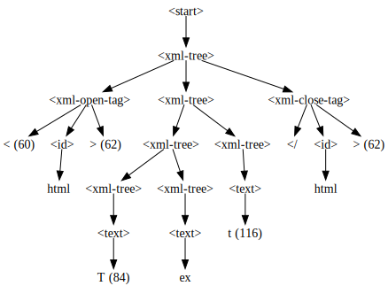
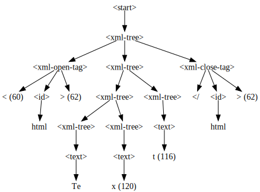
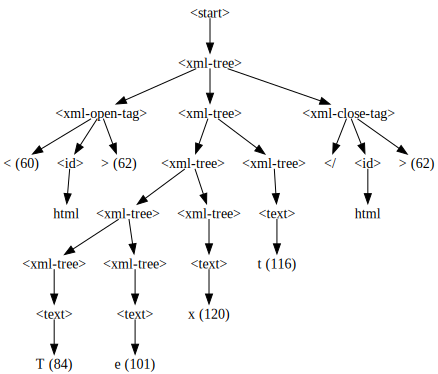
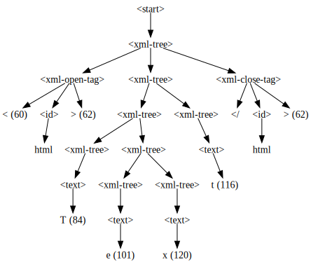
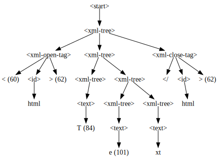
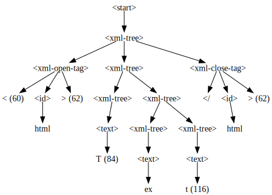
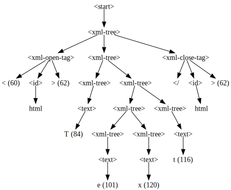
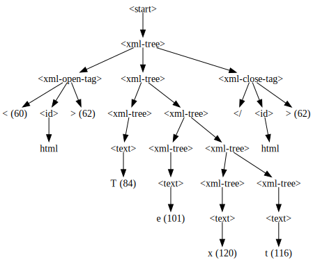
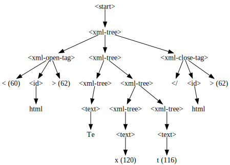
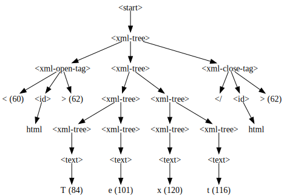
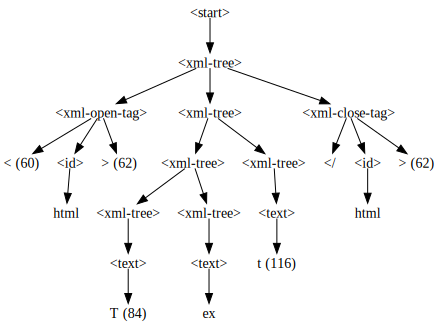
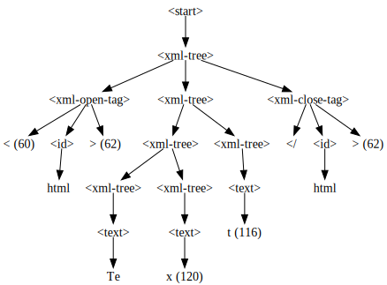
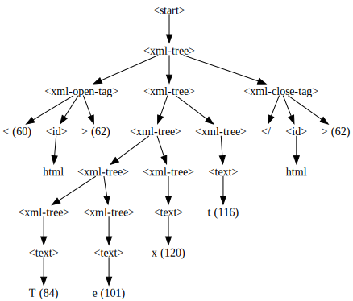
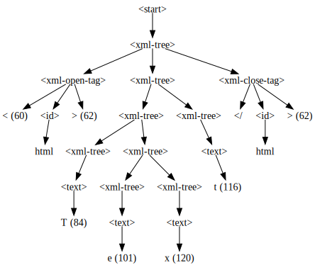
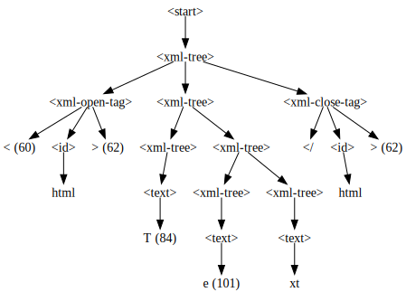
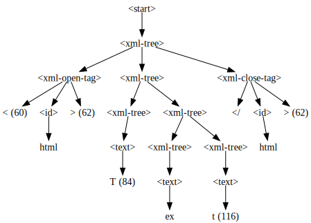
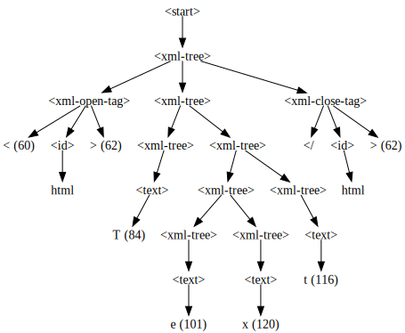
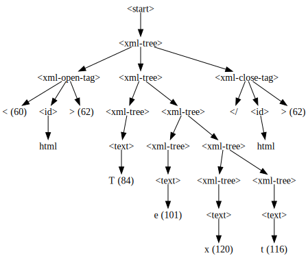
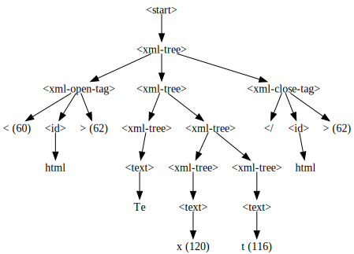
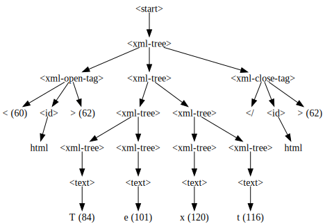
As we can see, the input starts with an opening tag, contains some text, and ends with a closing tag. Excellent. This is a structure that we can work with.
Building the Fragment Pool#
We are now ready to implement our first input-structure-aware mutator. Let’s initialize the mutator with the dictionary fragments representing the empty fragment pool. It contains a key for each symbol in the grammar (and the empty set as value).
class FragmentMutator(Mutator):
"""Mutate inputs with input fragments from a pool"""
def __init__(self, parser: EarleyParser) -> None:
"""Initialize empty fragment pool and add parser"""
self.parser = parser
self.fragments: Dict[str, List[DerivationTree]] = \
{k: [] for k in self.parser.cgrammar}
super().__init__()
The FragmentMutator adds fragments recursively. A fragment is a subtree in the parse tree and consists of the symbol of the current node and child nodes (i.e., descendant fragments). We can exclude fragments starting with symbols that are tokens, terminals, or not part of the grammar.
from Parser import terminals
class FragmentMutator(FragmentMutator):
def add_fragment(self, fragment: DerivationTree) -> None:
"""Recursively adds fragments to the fragment pool"""
(symbol, children) = fragment
if not self.is_excluded(symbol):
self.fragments[symbol].append(fragment)
assert children is not None
for subfragment in children:
self.add_fragment(subfragment)
def is_excluded(self, symbol: str) -> bool:
"""Returns true if a fragment starting with a specific
symbol and all its decendents can be excluded"""
return (symbol not in self.parser.grammar() or
symbol in self.parser.tokens or
symbol in terminals(self.parser.grammar()))
Parsing can take a long time, particularly if there is too much ambiguity during the parsing. In order to maintain the efficiency of mutational fuzzing, we will limit the parsing time to 200ms.
from Timeout import Timeout
The function add_to_fragment_pool() parses a seed (no longer than 200ms) and adds all its fragments to the fragment pool. If the parsing of the seed was successful, the attribute seed.has_structure is set to True. Otherwise, it is set to False.
class SeedWithStructure(Seed):
"""Seeds augmented with structure info"""
def __init__(self, data: str) -> None:
super().__init__(data)
self.has_structure = False
self.structure: DerivationTree = ("<empty>", [])
class FragmentMutator(FragmentMutator):
def add_to_fragment_pool(self, seed: SeedWithStructure) -> None:
"""Adds all fragments of a seed to the fragment pool"""
try: # only allow quick parsing of 200ms max
with Timeout(0.2):
seed.structure = next(self.parser.parse(seed.data))
self.add_fragment(seed.structure)
seed.has_structure = True
except (SyntaxError, TimeoutError):
seed.has_structure = False
Let’s see how FragmentMutator fills the fragment pool for a simple HTML seed input. We initialize mutator with the EarleyParser which itself is initialized with our XML_GRAMMAR.
from GrammarFuzzer import tree_to_string
valid_seed = SeedWithStructure(
"<html><head><title>Hello</title></head><body>World<br/></body></html>")
fragment_mutator = FragmentMutator(EarleyParser(XML_GRAMMAR, tokens=XML_TOKENS))
fragment_mutator.add_to_fragment_pool(valid_seed)
for key in fragment_mutator.fragments:
print(key)
for f in fragment_mutator.fragments[key]:
print("|-%s" % tree_to_string(f))
<start>
|-<html><head><title>Hello</title></head><body>World<br/></body></html>
<xml-tree>
|-<html><head><title>Hello</title></head><body>World<br/></body></html>
|-<head><title>Hello</title></head><body>World<br/></body>
|-<head><title>Hello</title></head>
|-<title>Hello</title>
|-Hello
|-<body>World<br/></body>
|-World<br/>
|-World
|-<br/>
<xml-open-tag>
|-<html>
|-<head>
|-<title>
|-<body>
<xml-openclose-tag>
|-<br/>
<xml-close-tag>
|-</title>
|-</head>
|-</body>
|-</html>
<xml-attribute>
<id>
<text>
<letter>
<letter_space>
For many symbols in the grammar, we have collected a number of fragments. There are several open and closing tags and several interesting fragments starting with the xml-tree symbol.
Summary. For each interesting symbol in the grammar, the FragmentMutator has a set of fragments. These fragments are extracted by first parsing the inputs to be mutated.
Fragment-Based Mutation#
We can use the fragments in the fragment pool to generate new inputs. Every seed that is being mutated is disassembled into fragments, and memoized – i.e., disassembled only the first time around.
class FragmentMutator(FragmentMutator):
def __init__(self, parser: EarleyParser) -> None:
"""Initialize mutators"""
super().__init__(parser)
self.seen_seeds: List[SeedWithStructure] = []
def mutate(self, seed: SeedWithStructure) -> SeedWithStructure:
"""Implement structure-aware mutation. Memoize seeds."""
if seed not in self.seen_seeds:
self.seen_seeds.append(seed)
self.add_to_fragment_pool(seed)
return super().mutate(seed)
Our first structural mutation operator is swap_fragments(), which choses a random fragment in the given seed and substitutes it with a random fragment from the pool. We make sure that both fragments start with the same symbol. For instance, we may swap a closing tag in the seed HTML by another closing tag from the fragment pool.
In order to choose a random fragment, the mutator counts all fragments (n_count) below the root fragment associated with the start-symbol.
class FragmentMutator(FragmentMutator):
def count_nodes(self, fragment: DerivationTree) -> int:
"""Returns the number of nodes in the fragment"""
symbol, children = fragment
if self.is_excluded(symbol):
return 0
assert children is not None
return 1 + sum(map(self.count_nodes, children))
In order to swap the chosen fragment – identified using the “global” variable self.to_swap – the seed’s parse tree is traversed recursively.
class FragmentMutator(FragmentMutator):
def recursive_swap(self, fragment: DerivationTree) -> DerivationTree:
"""Recursively finds the fragment to swap."""
symbol, children = fragment
if self.is_excluded(symbol):
return symbol, children
self.to_swap -= 1
if self.to_swap == 0:
return random.choice(list(self.fragments[symbol]))
assert children is not None
return symbol, list(map(self.recursive_swap, children))
Our structural mutator chooses a random number between 2 (i.e., excluding the start symbol) and the total number of fragments (n_count) and uses the recursive swapping to generate the new fragment. The new fragment is serialized as string and returned as new seed.
class FragmentMutator(FragmentMutator):
def __init__(self, parser: EarleyParser) -> None: # type: ignore
super().__init__(parser)
self.mutators = [self.swap_fragment] # type: ignore
def swap_fragment(self, seed: SeedWithStructure) -> SeedWithStructure:
"""Substitutes a random fragment with another with the same symbol"""
if seed.has_structure: # type: ignore
n_nodes = self.count_nodes(seed.structure)
self.to_swap = random.randint(2, n_nodes)
new_structure = self.recursive_swap(seed.structure)
new_seed = SeedWithStructure(tree_to_string(new_structure))
new_seed.has_structure = True
new_seed.structure = new_structure
return new_seed
return seed
valid_seed = SeedWithStructure(
"<html><head><title>Hello</title></head><body>World<br/></body></html>")
lf_mutator = FragmentMutator(parser)
print(valid_seed)
lf_mutator.mutate(valid_seed)
<html><head><title>Hello</title></head><body>World<br/></body></html>
<title><head><title>Hello</title></head><body>World<br/></body></html>
As we can see, one fragment has been substituted by another.
We can use a similar recursive traversal to remove a random fragment.
class FragmentMutator(FragmentMutator):
def recursive_delete(self, fragment: DerivationTree) -> DerivationTree:
"""Recursively finds the fragment to delete"""
symbol, children = fragment
if self.is_excluded(symbol):
return symbol, children
self.to_delete -= 1
if self.to_delete == 0:
return symbol, []
assert children is not None
return symbol, list(map(self.recursive_delete, children))
We should also define the corresponding structural deletion operator, as well.
class FragmentMutator(FragmentMutator):
def __init__(self, parser): # type: ignore
super().__init__(parser)
self.mutators.append(self.delete_fragment)
def delete_fragment(self, seed: SeedWithStructure) -> SeedWithStructure:
"""Delete a random fragment"""
if seed.has_structure:
n_nodes = self.count_nodes(seed.structure)
self.to_delete = random.randint(2, n_nodes)
new_structure = self.recursive_delete(seed.structure)
new_seed = SeedWithStructure(tree_to_string(new_structure))
new_seed.has_structure = True
new_seed.structure = new_structure
# do not return an empty new_seed
if not new_seed.data:
return seed
else:
return new_seed
return seed
Summary. We now have all ingredients for structure-aware fuzzing. Our mutator disassembles all seeds into fragments, which are then added to the fragment pool. Our mutator swaps random fragments in a given seed with fragments of the same type. And our mutator deletes random fragments in a given seed. This allows maintaining a high degree of validity for the generated inputs w.r.t. the given grammar.
Try it. Try adding other structural mutation operators. How would an add-operator know the position in a given seed file, where it is okay to add a fragment starting with a certain symbol?
Fragment-Based Fuzzing#
We can now define an input-structure aware fuzzer as pioneered in LangFuzz. To implement LangFuzz, we modify our blackbox mutational fuzzer to stack up to four structural mutations.
class LangFuzzer(AdvancedMutationFuzzer):
"""Blackbox fuzzer mutating input fragments. Roughly based on `LangFuzz`."""
def create_candidate(self) -> Seed: # type: ignore
"""Returns an input generated by fuzzing a seed in the population"""
candidate = self.schedule.choose(self.population)
trials = random.randint(1, 4)
for i in range(trials):
candidate = self.mutator.mutate(candidate)
return candidate
Okay, let’s take our first input-structure aware fuzzer for a spin. Being careful, we set n=300 for now.
n = 300
runner = FunctionCoverageRunner(my_parser)
mutator = FragmentMutator(EarleyParser(XML_GRAMMAR, tokens=XML_TOKENS))
schedule = PowerSchedule()
lang_fuzzer = LangFuzzer([valid_seed.data], mutator, schedule)
start = time.time()
lang_fuzzer.runs(runner, trials=n)
end = time.time()
"It took LangFuzzer %0.2f seconds to generate and execute %d inputs." % (end - start, n)
Exception ignored in: <bound method IPythonKernel._clean_thread_parent_frames of <ipykernel.ipkernel.IPythonKernel object at 0x103912720>>
Traceback (most recent call last):
File "/Users/zeller/.local/lib/python3.12/site-packages/ipykernel/ipkernel.py", line 775, in _clean_thread_parent_frames
def _clean_thread_parent_frames(
File "Timeout.ipynb", line 43, in timeout_handler
}
TimeoutError:
Exception ignored in: <bound method IPythonKernel._clean_thread_parent_frames of <ipykernel.ipkernel.IPythonKernel object at 0x103912720>>
Traceback (most recent call last):
File "/Users/zeller/.local/lib/python3.12/site-packages/ipykernel/ipkernel.py", line 775, in _clean_thread_parent_frames
def _clean_thread_parent_frames(
File "Timeout.ipynb", line 43, in timeout_handler
}
TimeoutError:
Exception ignored in: <bound method IPythonKernel._clean_thread_parent_frames of <ipykernel.ipkernel.IPythonKernel object at 0x103912720>>
Traceback (most recent call last):
File "/Users/zeller/.local/lib/python3.12/site-packages/ipykernel/ipkernel.py", line 775, in _clean_thread_parent_frames
def _clean_thread_parent_frames(
File "Timeout.ipynb", line 43, in timeout_handler
}
TimeoutError:
Exception ignored in: <bound method IPythonKernel._clean_thread_parent_frames of <ipykernel.ipkernel.IPythonKernel object at 0x103912720>>
Traceback (most recent call last):
File "/Users/zeller/.local/lib/python3.12/site-packages/ipykernel/ipkernel.py", line 775, in _clean_thread_parent_frames
def _clean_thread_parent_frames(
File "Timeout.ipynb", line 43, in timeout_handler
}
TimeoutError:
Exception ignored in: <bound method IPythonKernel._clean_thread_parent_frames of <ipykernel.ipkernel.IPythonKernel object at 0x103912720>>
Traceback (most recent call last):
File "/Users/zeller/.local/lib/python3.12/site-packages/ipykernel/ipkernel.py", line 775, in _clean_thread_parent_frames
def _clean_thread_parent_frames(
File "Timeout.ipynb", line 43, in timeout_handler
}
TimeoutError:
Exception ignored in: <bound method IPythonKernel._clean_thread_parent_frames of <ipykernel.ipkernel.IPythonKernel object at 0x103912720>>
Traceback (most recent call last):
File "/Users/zeller/.local/lib/python3.12/site-packages/ipykernel/ipkernel.py", line 775, in _clean_thread_parent_frames
def _clean_thread_parent_frames(
File "Timeout.ipynb", line 43, in timeout_handler
}
TimeoutError:
Exception ignored in: <bound method IPythonKernel._clean_thread_parent_frames of <ipykernel.ipkernel.IPythonKernel object at 0x103912720>>
Traceback (most recent call last):
File "/Users/zeller/.local/lib/python3.12/site-packages/ipykernel/ipkernel.py", line 775, in _clean_thread_parent_frames
def _clean_thread_parent_frames(
File "Timeout.ipynb", line 43, in timeout_handler
}
TimeoutError:
Exception ignored in: <bound method IPythonKernel._clean_thread_parent_frames of <ipykernel.ipkernel.IPythonKernel object at 0x103912720>>
Traceback (most recent call last):
File "/Users/zeller/.local/lib/python3.12/site-packages/ipykernel/ipkernel.py", line 775, in _clean_thread_parent_frames
def _clean_thread_parent_frames(
File "Timeout.ipynb", line 43, in timeout_handler
}
TimeoutError:
'It took LangFuzzer 94.94 seconds to generate and execute 300 inputs.'
We observe that structural mutation is sooo very slow. This is despite our time budget of 200ms for parsing. In contrast, our blackbox fuzzer alone can generate about 10k inputs per second!
runner = FunctionCoverageRunner(my_parser)
mutator = Mutator()
schedule = PowerSchedule()
blackFuzzer = AdvancedMutationFuzzer([valid_seed.data], mutator, schedule)
start = time.time()
blackFuzzer.runs(runner, trials=n)
end = time.time()
"It took a blackbox fuzzer %0.2f seconds to generate and execute %d inputs." % (end - start, n)
'It took a blackbox fuzzer 0.10 seconds to generate and execute 300 inputs.'
Indeed, our blackbox fuzzer is done in the blink of an eye.
Try it. We can deal with this overhead using deferred parsing. Instead of wasting time in the beginning of the fuzzing campaign when a byte-level mutator would make efficient progress, deferred parsing suggests to invest time in structural mutation only later in the fuzzing campaign when it becomes viable.
blackbox_coverage = len(runner.coverage())
"During this fuzzing campaign, the blackbox fuzzer covered %d statements." % blackbox_coverage
'During this fuzzing campaign, the blackbox fuzzer covered 94 statements.'
Let’s print some stats for our fuzzing campaigns. Since we’ll need to print stats more often later, we should wrap this into a function. In order to measure coverage, we import the population_coverage function. It takes a set of inputs and a Python function, executes the inputs on that function and collects coverage information. Specifically, it returns a tuple (all_coverage, cumulative_coverage) where all_coverage is the set of statements covered by all inputs, and cumulative_coverage is the number of statements covered as the number of executed inputs increases. We are just interested in the latter to plot coverage over time.
from Coverage import population_coverage
def print_stats(fuzzer, parser: Parser) -> None:
coverage, _ = population_coverage(fuzzer.inputs, my_parser)
has_structure = 0
for seed in fuzzer.inputs:
# reuse memoized information
if hasattr(seed, "has_structure"):
if seed.has_structure:
has_structure += 1
else:
if isinstance(seed, str):
seed = Seed(seed)
try:
with Timeout(0.2):
next(parser.parse(seed.data)) # type: ignore
has_structure += 1
except (SyntaxError, TimeoutError):
pass
print("From the %d generated inputs, %d (%0.2f%%) can be parsed.\n"
"In total, %d statements are covered." % (
len(fuzzer.inputs),
has_structure,
100 * has_structure / len(fuzzer.inputs),
len(coverage)))
For LangFuzzer, let’s see how many of the inputs generated by LangFuzz are valid (i.e., parsable) and how many statements were covered.
print_stats(lang_fuzzer, EarleyParser(XML_GRAMMAR, tokens=XML_TOKENS))
From the 300 generated inputs, 172 (57.33%) can be parsed.
In total, 93 statements are covered.
What are the stats for the mutational fuzzer that uses only byte-level mutation (and no grammars)?
print_stats(blackFuzzer, EarleyParser(XML_GRAMMAR, tokens=XML_TOKENS))
Exception ignored in: <bound method IPythonKernel._clean_thread_parent_frames of <ipykernel.ipkernel.IPythonKernel object at 0x103912720>>
Traceback (most recent call last):
File "/Users/zeller/.local/lib/python3.12/site-packages/ipykernel/ipkernel.py", line 775, in _clean_thread_parent_frames
def _clean_thread_parent_frames(
File "Timeout.ipynb", line 43, in timeout_handler
}
TimeoutError:
From the 300 generated inputs, 34 (11.33%) can be parsed.
In total, 167 statements are covered.
Summary. Our fragment-level blackbox fuzzer (LangFuzzer) generates more valid inputs but achieves less code coverage than a fuzzer with our byte-level fuzzer. So, there is some value in generating inputs that do not stick to the provided grammar.
Integration with Greybox Fuzzing#
In the following we integrate fragment-level blackbox fuzzing (LangFuzz-style) with byte-level greybox fuzzing (AFL-style). The additional coverage-feedback might allow us to increase code coverage more quickly.
A greybox fuzzer adds to the seed population all generated inputs which increase code coverage. Inputs are generated in two stages, stacking up to four structural mutations and up to 32 byte-level mutations.
class GreyboxGrammarFuzzer(GreyboxFuzzer):
"""Greybox fuzzer using grammars."""
def __init__(self, seeds: List[str],
byte_mutator: Mutator, tree_mutator: FragmentMutator,
schedule: PowerSchedule) -> None:
"""Constructor.
`seeds` - set of inputs to mutate.
`byte_mutator` - a byte-level mutator.
`tree_mutator` = a tree-level mutator.
`schedule` - a power schedule.
"""
super().__init__(seeds, byte_mutator, schedule)
self.tree_mutator = tree_mutator
def create_candidate(self) -> str:
"""Returns an input generated by structural mutation
of a seed in the population"""
seed = cast(SeedWithStructure, self.schedule.choose(self.population))
# Structural mutation
trials = random.randint(0, 4)
for i in range(trials):
seed = self.tree_mutator.mutate(seed)
# Byte-level mutation
candidate = seed.data
if trials == 0 or not seed.has_structure or random.randint(0, 1) == 1:
dumb_trials = min(len(seed.data), 1 << random.randint(1, 5))
for i in range(dumb_trials):
candidate = self.mutator.mutate(candidate)
return candidate
Let’s run our integrated fuzzer with the standard byte-level mutator and our fragment-based structural mutator that was introduced above.
runner = FunctionCoverageRunner(my_parser)
byte_mutator = Mutator()
tree_mutator = FragmentMutator(EarleyParser(XML_GRAMMAR, tokens=XML_TOKENS))
schedule = PowerSchedule()
gg_fuzzer = GreyboxGrammarFuzzer([valid_seed.data], byte_mutator, tree_mutator, schedule)
start = time.time()
gg_fuzzer.runs(runner, trials=n)
end = time.time()
"It took the greybox grammar fuzzer %0.2f seconds to generate and execute %d inputs." % (end - start, n)
'It took the greybox grammar fuzzer 0.69 seconds to generate and execute 300 inputs.'
print_stats(gg_fuzzer, EarleyParser(XML_GRAMMAR, tokens=XML_TOKENS))
From the 300 generated inputs, 2 (0.67%) can be parsed.
In total, 171 statements are covered.
Summary. Our structural greybox fuzzer
runs faster than the fragment-based LangFuzzer,
achieves more coverage than both the fragment-based LangFuzzer and the vanilla blackbox mutational fuzzer, and
generates fewer valid inputs than even the vanilla blackbox mutational fuzzer.
Fuzzing with Input Regions#
In the previous section, we have seen that most inputs that are added as seeds are invalid w.r.t. our given grammar. Yet, in order to apply our fragment-based mutators, we need it to parse the seed successfully. Otherwise, the entire fragment-based approach becomes useless. The question arises: How can we derive structure from (invalid) seeds that cannot be parsed successfully?
To this end, we introduce the idea of region-based mutation, first explored with the AFLSmart structural greybox fuzzer \cite{Pham2018aflsmart}. AFLSmart implements byte-level, fragment-based, and region-based mutation as well as validity-based power schedules. We define region-based mutators, where a region is a consecutive sequence of bytes in the input that can be associated with a symbol in the grammar.
The basic idea of fuzzing with input regions is shown in the following diagram. After parsing an input (into a derivation tree), we can identify regions associated with specific subtrees of the derivation tree. These regions can then be deleted or swapped.

Such regions can also be determined even if the input is incomplete or invalid, allowing for robust parsing.
Determining Symbol Regions#
How can we obtain regions for a given input? The function chart_parse() of the Earley parser produces a parse table for a string. For each letter in the string, this table gives the potential symbol and a region of neighboring letters that might belong to the same symbol.
invalid_seed = Seed("<html><body><i>World</i><br/>>/body></html>")
parser = EarleyParser(XML_GRAMMAR, tokens=XML_TOKENS)
table = parser.chart_parse(invalid_seed.data, parser.start_symbol())
for column in table:
print(column)
print("---")
None chart[0]
---
< chart[1]
---
h chart[2]
<letter>:= h |(1,2)
<id>:= <letter> |(1,2)
---
t chart[3]
<letter>:= t |(2,3)
<id>:= <id> <letter> |(1,3)
---
m chart[4]
<letter>:= m |(3,4)
<id>:= <id> <letter> |(1,4)
---
l chart[5]
<letter>:= l |(4,5)
<id>:= <id> <letter> |(1,5)
---
> chart[6]
<xml-open-tag>:= < <id> > |(0,6)
---
< chart[7]
---
b chart[8]
<letter>:= b |(7,8)
<id>:= <letter> |(7,8)
---
o chart[9]
<letter>:= o |(8,9)
<id>:= <id> <letter> |(7,9)
---
d chart[10]
<letter>:= d |(9,10)
<id>:= <id> <letter> |(7,10)
---
y chart[11]
<letter>:= y |(10,11)
<id>:= <id> <letter> |(7,11)
---
> chart[12]
<xml-open-tag>:= < <id> > |(6,12)
---
< chart[13]
---
i chart[14]
<letter>:= i |(13,14)
<id>:= <letter> |(13,14)
---
> chart[15]
<xml-open-tag>:= < <id> > |(12,15)
---
W chart[16]
<letter_space>:= W |(15,16)
<text>:= <letter_space> |(15,16)
<xml-tree>:= <text> |(15,16)
---
o chart[17]
<letter_space>:= o |(16,17)
<text>:= <text> <letter_space> |(15,17)
<text>:= <letter_space> |(16,17)
<xml-tree>:= <text> |(15,17)
<xml-tree>:= <text> |(16,17)
<xml-tree>:= <xml-tree> <xml-tree> |(15,17)
---
r chart[18]
<letter_space>:= r |(17,18)
<text>:= <text> <letter_space> |(15,18)
<text>:= <text> <letter_space> |(16,18)
<text>:= <letter_space> |(17,18)
<xml-tree>:= <text> |(15,18)
<xml-tree>:= <text> |(16,18)
<xml-tree>:= <text> |(17,18)
<xml-tree>:= <xml-tree> <xml-tree> |(15,18)
<xml-tree>:= <xml-tree> <xml-tree> |(16,18)
---
l chart[19]
<letter_space>:= l |(18,19)
<text>:= <text> <letter_space> |(15,19)
<text>:= <text> <letter_space> |(16,19)
<text>:= <text> <letter_space> |(17,19)
<text>:= <letter_space> |(18,19)
<xml-tree>:= <text> |(15,19)
<xml-tree>:= <text> |(16,19)
<xml-tree>:= <text> |(17,19)
<xml-tree>:= <text> |(18,19)
<xml-tree>:= <xml-tree> <xml-tree> |(15,19)
<xml-tree>:= <xml-tree> <xml-tree> |(16,19)
<xml-tree>:= <xml-tree> <xml-tree> |(17,19)
---
d chart[20]
<letter_space>:= d |(19,20)
<text>:= <text> <letter_space> |(15,20)
<text>:= <text> <letter_space> |(16,20)
<text>:= <text> <letter_space> |(17,20)
<text>:= <text> <letter_space> |(18,20)
<text>:= <letter_space> |(19,20)
<xml-tree>:= <text> |(15,20)
<xml-tree>:= <text> |(16,20)
<xml-tree>:= <text> |(17,20)
<xml-tree>:= <text> |(18,20)
<xml-tree>:= <text> |(19,20)
<xml-tree>:= <xml-tree> <xml-tree> |(15,20)
<xml-tree>:= <xml-tree> <xml-tree> |(16,20)
<xml-tree>:= <xml-tree> <xml-tree> |(17,20)
<xml-tree>:= <xml-tree> <xml-tree> |(18,20)
---
< chart[21]
---
/ chart[22]
---
i chart[23]
<letter>:= i |(22,23)
<id>:= <letter> |(22,23)
---
> chart[24]
<xml-close-tag>:= < / <id> > |(20,24)
<xml-tree>:= <xml-open-tag> <xml-tree> <xml-close-tag> |(12,24)
---
< chart[25]
---
b chart[26]
<letter>:= b |(25,26)
<id>:= <letter> |(25,26)
---
r chart[27]
<letter>:= r |(26,27)
<id>:= <id> <letter> |(25,27)
---
/ chart[28]
---
> chart[29]
<xml-openclose-tag>:= < <id> / > |(24,29)
<xml-tree>:= <xml-openclose-tag> |(24,29)
<xml-tree>:= <xml-tree> <xml-tree> |(12,29)
---
> chart[30]
---
/ chart[31]
---
b chart[32]
---
o chart[33]
---
d chart[34]
---
y chart[35]
---
> chart[36]
---
< chart[37]
---
/ chart[38]
---
h chart[39]
---
t chart[40]
---
m chart[41]
---
l chart[42]
---
> chart[43]
---
The number of columns in this table that are associated with potential symbols correspond to the number of letters that could be parsed successfully. In other words, we can use this table to compute the longest parsable substring.
cols = [col for col in table if col.states]
parsable = invalid_seed.data[:len(cols)-1]
print("'%s'" % invalid_seed)
parsable
'<html><body><i>World</i><br/>>/body></html>'
'<html><body><i>World</i><br/>'
From this, we can compute the degree of validity for an input.
validity = 100 * len(parsable) / len(invalid_seed.data)
"%0.1f%% of the string can be parsed successfully." % validity
'67.4% of the string can be parsed successfully.'
Summary. Unlike input fragments, input regions can be derived even if the parser fails to generate the entire parse tree.
Region-Based Mutation#
To fuzz invalid seeds, the region-based mutator associates symbols from the grammar with regions (i.e., indexed substrings) in the seed. The overridden method add_to_fragment_pool() first tries to mine the fragments from the seed. If this fails, the region mutator uses Earley parser to derive the parse table. For each column (i.e., letter), it extracts the symbols and corresponding regions. This allows the mutator to store the set of regions with each symbol.
class SeedWithRegions(SeedWithStructure):
"""Seeds augmented with structure info"""
def __init__(self, data: str) -> None:
super().__init__(data)
self.has_regions = False
self.regions: Dict[str, Set] = {}
class RegionMutator(FragmentMutator):
def add_to_fragment_pool(self, seed: SeedWithRegions) -> None: # type: ignore
"""Mark fragments and regions in a seed file"""
super().add_to_fragment_pool(seed)
if not seed.has_structure:
try:
with Timeout(0.2):
seed.regions = {k: set() for k in self.parser.cgrammar}
for column in self.parser.chart_parse(seed.data,
self.parser.start_symbol()):
for state in column.states:
if (not self.is_excluded(state.name) and
state.e_col.index - state.s_col.index > 1 and
state.finished()):
seed.regions[state.name].add((state.s_col.index,
state.e_col.index))
seed.has_regions = True
except TimeoutError:
seed.has_regions = False
else:
seed.has_regions = False
This is how these regions look like for our invalid seed. A region consists of a start and end index in the seed string.
invalid_seed = SeedWithRegions("<html><body><i>World</i><br/>>/body></html>")
mutator = RegionMutator(parser)
mutator.add_to_fragment_pool(invalid_seed)
for symbol in invalid_seed.regions: # type: ignore
print(symbol)
for (s, e) in invalid_seed.regions[symbol]: # type: ignore
print("|-(%d,%d) : %s" % (s, e, invalid_seed.data[s:e]))
<start>
<xml-tree>
|-(16,20) : orld
|-(12,24) : <i>World</i>
|-(17,20) : rld
|-(18,20) : ld
|-(16,19) : orl
|-(15,17) : Wo
|-(12,29) : <i>World</i><br/>
|-(17,19) : rl
|-(15,20) : World
|-(24,29) : <br/>
|-(15,19) : Worl
|-(16,18) : or
|-(15,18) : Wor
<xml-open-tag>
|-(6,12) : <body>
|-(12,15) : <i>
|-(0,6) : <html>
<xml-openclose-tag>
|-(24,29) : <br/>
<xml-close-tag>
|-(20,24) : </i>
<xml-attribute>
<id>
<text>
<letter>
<letter_space>
Now that we know which regions in the seed belong to which symbol, we can define region-based swap and delete operators.
class RegionMutator(RegionMutator):
def swap_fragment(self, seed: SeedWithRegions) -> SeedWithRegions: # type: ignore
"""Chooses a random region and swaps it with a fragment
that starts with the same symbol"""
if not seed.has_structure and seed.has_regions:
regions = [r for r in seed.regions
if (len(seed.regions[r]) > 0 and
len(self.fragments[r]) > 0)]
if len(regions) == 0:
return seed
key = random.choice(list(regions))
s, e = random.choice(list(seed.regions[key]))
swap_structure = random.choice(self.fragments[key])
swap_string = tree_to_string(swap_structure)
new_seed = SeedWithRegions(seed.data[:s] + swap_string + seed.data[e:])
new_seed.has_structure = False
new_seed.has_regions = False
return new_seed
else:
return super().swap_fragment(seed) # type: ignore
class RegionMutator(RegionMutator):
def delete_fragment(self, seed: SeedWithRegions) -> SeedWithRegions: # type: ignore
"""Deletes a random region"""
if not seed.has_structure and seed.has_regions:
regions = [r for r in seed.regions
if len(seed.regions[r]) > 0]
if len(regions) == 0:
return seed
key = random.choice(list(regions))
s, e = (0, 0)
while (e - s < 2):
s, e = random.choice(list(seed.regions[key]))
new_seed = SeedWithRegions(seed.data[:s] + seed.data[e:])
new_seed.has_structure = False
new_seed.has_regions = False
return new_seed
else:
return super().delete_fragment(seed) # type: ignore
Let’s try our new region-based mutator. We add a simple, valid seed to the fragment pool and attempt to mutate the invalid seed.
simple_seed = SeedWithRegions("<b>Text</b>")
mutator = RegionMutator(parser)
mutator.add_to_fragment_pool(simple_seed)
print(invalid_seed)
mutator.mutate(invalid_seed)
<html><body><i>World</i><br/>>/body></html>
<html><body>>/body></html>
Summary. We can use the Earley parser to generate a parse table and assign regions in the input to symbols in the grammar. Our region mutators can substitute these regions with fragments from the fragment pool that start with the same symbol, or delete these regions entirely.
Try it. Implement a region pool (similar to the fragment pool) and a swap_region() mutator.
You can execute your own code by opening this chapter as Jupyter notebook.
Integration with Greybox Fuzzing#
Let’s try our shiny new region mutator by integrating it with our structure-aware greybox fuzzer.
runner = FunctionCoverageRunner(my_parser)
byte_mutator = Mutator()
tree_mutator = RegionMutator(EarleyParser(XML_GRAMMAR, tokens=XML_TOKENS))
schedule = PowerSchedule()
regionFuzzer = GreyboxGrammarFuzzer([valid_seed.data], byte_mutator, tree_mutator, schedule)
start = time.time()
regionFuzzer.runs(runner, trials = n)
end = time.time()
"""
It took the structural greybox fuzzer with region mutator
%0.2f seconds to generate and execute %d inputs.
""" % (end - start, n)
'\nIt took the structural greybox fuzzer with region mutator\n6.83 seconds to generate and execute 300 inputs.\n'
We can see that the structural greybox fuzzer with region-based mutator is slower than the fragment-based mutator alone. This is because region-based structural mutation is applicable for all seeds. In contrast, fragment-based mutators were applicable only for tiny number of parsable seeds. Otherwise, only (very efficient) byte-level mutators were applied.
Let’s also print the average degree of validity for the seeds in the population.
def print_more_stats(fuzzer: GreyboxGrammarFuzzer, parser: EarleyParser):
print_stats(fuzzer, parser)
validity = 0.0
total = 0
for seed in fuzzer.population:
if not seed.data: continue
table = parser.chart_parse(seed.data, parser.start_symbol())
cols = [col for col in table if col.states]
parsable = invalid_seed.data[:len(cols)-1]
validity += len(parsable) / len(seed.data)
total += 1
print("On average, %0.1f%% of a seed in the population can be successfully parsed." % (100 * validity / total))
print_more_stats(regionFuzzer, parser)
From the 300 generated inputs, 11 (3.67%) can be parsed.
In total, 168 statements are covered.
On average, 18.2% of a seed in the population can be successfully parsed.
Summary. Compared to fragment-based mutation, a greybox fuzzer with region-based mutation achieves higher coverage but generates a smaller number of valid inputs. The higher coverage is explained by leveraging at least some structure for seeds that cannot be parsed successfully.
Focusing on Valid Seeds#
In the previous section, we have a problem: The low (degree of) validity. To address this problem, a validity-based power schedule assigns more energy to seeds that have a higher degree of validity. In other words, the fuzzer spends more time fuzzing seeds that are more valid.
import math
class AFLSmartSchedule(PowerSchedule):
def __init__(self, parser: EarleyParser, exponent: float = 1.0):
self.parser = parser
self.exponent = exponent
def parsable(self, seed: Seed) -> str:
"""Returns the substring that is parsable"""
table = self.parser.chart_parse(seed.data, self.parser.start_symbol())
cols = [col for col in table if col.states]
return seed.data[:len(cols)-1]
def degree_of_validity(self, seed: Seed) -> float:
"""Returns the proportion of a seed that is parsable"""
if not hasattr(seed, 'validity'):
seed.validity = (len(self.parsable(seed)) / len(seed.data) # type: ignore
if len(seed.data) > 0 else 0)
return seed.validity # type: ignore
def assignEnergy(self, population: Sequence[Seed]):
"""Assign exponential energy proportional to degree of validity"""
for seed in population:
seed.energy = ((self.degree_of_validity(seed) / math.log(len(seed.data))) ** self.exponent
if len(seed.data) > 1 else 0)
Let’s play with the degree of validity by passing in a valid seed …
smart_schedule = AFLSmartSchedule(parser)
print("%11s: %s" % ("Entire seed", simple_seed))
print("%11s: %s" % ("Parsable", smart_schedule.parsable(simple_seed)))
"Degree of validity: %0.2f%%" % (100 * smart_schedule.degree_of_validity(simple_seed))
Entire seed: <b>Text</b>
Parsable: <b>Text</b>
'Degree of validity: 100.00%'
… and an invalid seed.
print("%11s: %s" % ("Entire seed", invalid_seed))
print("%11s: %s" % ("Parsable", smart_schedule.parsable(invalid_seed)))
"Degree of validity: %0.2f%%" % (100 * smart_schedule.degree_of_validity(invalid_seed))
Entire seed: <html><body><i>World</i><br/>>/body></html>
Parsable: <html><body><i>World</i><br/>
'Degree of validity: 67.44%'
Excellent. We can compute the degree of validity as the proportion of the string that can be parsed.
Let’s plug the validity-based power schedule into the structure-aware greybox fuzzer.
runner = FunctionCoverageRunner(my_parser)
byte_mutator = Mutator()
tree_mutator = RegionMutator(EarleyParser(XML_GRAMMAR, tokens=XML_TOKENS))
schedule = AFLSmartSchedule(parser)
aflsmart_fuzzer = GreyboxGrammarFuzzer([valid_seed.data], byte_mutator,
tree_mutator, schedule)
start = time.time()
aflsmart_fuzzer.runs(runner, trials=n)
end = time.time()
"It took AFLSmart %0.2f seconds to generate and execute %d inputs." % (end - start, n)
Exception ignored in: <bound method IPythonKernel._clean_thread_parent_frames of <ipykernel.ipkernel.IPythonKernel object at 0x103912720>>
Traceback (most recent call last):
File "/Users/zeller/.local/lib/python3.12/site-packages/ipykernel/ipkernel.py", line 775, in _clean_thread_parent_frames
def _clean_thread_parent_frames(
File "Timeout.ipynb", line 43, in timeout_handler
}
TimeoutError:
Exception ignored in: <bound method IPythonKernel._clean_thread_parent_frames of <ipykernel.ipkernel.IPythonKernel object at 0x103912720>>
Traceback (most recent call last):
File "/Users/zeller/.local/lib/python3.12/site-packages/ipykernel/ipkernel.py", line 775, in _clean_thread_parent_frames
def _clean_thread_parent_frames(
File "Timeout.ipynb", line 43, in timeout_handler
}
TimeoutError:
Exception ignored in: <bound method IPythonKernel._clean_thread_parent_frames of <ipykernel.ipkernel.IPythonKernel object at 0x103912720>>
Traceback (most recent call last):
File "/Users/zeller/.local/lib/python3.12/site-packages/ipykernel/ipkernel.py", line 775, in _clean_thread_parent_frames
def _clean_thread_parent_frames(
File "Timeout.ipynb", line 43, in timeout_handler
}
TimeoutError:
'It took AFLSmart 26.16 seconds to generate and execute 300 inputs.'
print_more_stats(aflsmart_fuzzer, parser)
From the 300 generated inputs, 9 (3.00%) can be parsed.
In total, 159 statements are covered.
On average, 22.6% of a seed in the population can be successfully parsed.
Summary. Indeed, by spending more time fuzzing seeds with a higher degree of validity, we also generate inputs with a higher degree of validity. More inputs are entirely valid w.r.t. the given grammar.
Read up. Learn more about region-based fuzzing, deferred parsing, and validity-based schedules in the original AFLSmart paper: “Smart Greybox Fuzzing” by Pham and co-authors. Download and improve AFLSmart: aflsmart/aflsmart.
Mining Seeds#
By now, it should have become clear that the choice of seeds can very much influence the success of fuzzing. One aspect is variability – our seeds should cover as many different features as possible in order to increase coverage. Another aspect, however, is the likelihood of a seed to induce errors – that is, if a seed was involved in causing a failure before, then a mutation of this very seed may be likely to induce failures again. This is because fixes for past failures typically are successful in letting the concrete failure no longer occur, but sometimes may fail to capture all conditions under which a failure may occur. Hence, even if the original failure is fixed, the likelihood of an error in the surroundings of the original failure-inducing input is still higher. It thus pays off to use as seeds inputs that are known to have caused failures before.
To put things in context, Holler’s LangFuzz fuzzer used as seeds JavaScript inputs from CVE reports. These were published as failure-inducing inputs at a time when the error already had been fixed; thus they could do no harm anymore. Yet, by using such inputs as seeds, LangFuzz would create plenty of mutations and recombinations of all their features, many of which would (and do) find errors again and again.
Lessons Learned#
A dictionary is useful to inject important keywords into the generated inputs.
Fragment-based mutation first disassembles seeds into fragments, and reassembles these fragments to generate new inputs. A fragment is a subtree in the seed’s parse tree. However, fragment-based mutation requires that the seeds can be parsed successfully, which may not be true for seeds discovered by a coverage-based greybox fuzzer.
Region-based mutation marks regions in the input as belonging to a certain symbol in the grammar. For instance, it may identify a substring ‘’ as closing tag. These regions can then be deleted or substituted by fragments or regions belonging to the same symbol. Unlike fragment-based mutation, region-based mutation is applicable to all seeds - even those that can be parsed only partially. However, the degree of validity is still quite low for the generated inputs.
A validity-based power schedule invests more energy into seeds with a higher degree of validity. The inputs that are generated also have a higher degree of validity.
Mining seeds from repositories of previous failure-inducing inputs results in input fragments associated with past failures, raising the likelihood to find more failures in the vicinity.
Background#
This chapter builds on the following two works:
The LangFuzz fuzzer \cite{Holler2012} is an efficient (and effective!) grammar-based fuzzer for (mostly) JavaScript. It uses the grammar for parsing seeds and recombining their inputs with generated parts and found 2,600 bugs in JavaScript interpreters to date.
Smart greybox fuzzing (AFLSmart) brings together coverage-based fuzzing and grammar-based (structural) fuzzing, as described in \cite{Pham2018aflsmart}. The resulting AFLSMART tool has discovered 42 zero-day vulnerabilities in widely-used, well-tested tools and libraries; so far 17 CVEs were assigned.
Recent fuzzing work also brings together grammar-based fuzzing and coverage.
Superion \cite{Wang2019superion} is equivalent to our section “Integration with Greybox Fuzzing”, as above – that is, a combination of LangFuzz and Greybox Fuzzing, but no AFL-style byte-level mutation. Superion can improve the code coverage (i.e., 16.7% and 8.8% in line and function coverage) and bug-finding capability over AFL and jsfunfuzz. According to the authors, they found 30 new bugs, among which they discovered 21 new vulnerabilities with 16 CVEs assigned and 3.2K USD bug bounty rewards received.
Nautilus \cite{Aschermann2019nautilus} also combines grammar-based fuzzing with coverage feedback. It maintains the parse tree for all seeds and generated inputs. To allow AFL-style byte-level mutations, it “collapses” subtrees back to byte-level representations. This has the advantage of not having to re-parse generated seeds; however, over time, Nautilus degenerates to structure-unaware greybox fuzzing because it does not re-parse collapsed subtrees to reconstitute input structure for later seeds where most of the parse tree is collapsed. Nautilus identified bugs in mruby, PHP, ChakraCore, and in Lua; reporting these bugs was awarded with a sum of 2600 USD and 6 CVEs were assigned.
FormatFuzzer is a framework for high-efficiency, high-quality generation and parsing of binary inputs. It takes a binary template that describes the format of a binary input and generates an executable that produces and parses the given binary format. From a binary template for GIF, for instance, FormatFuzzer produces a GIF generator - also known as GIF fuzzer. Generators produced by FormatFuzzer are highly efficient, producing thousands of valid test inputs per second. FormatFuzzer operates in black-box settings, but can also integrate with AFL to produce valid inputs that also aim for maximum coverage.
Synopsis#
This chapter introduces advanced methods for language-based grey-box fuzzing inspired by the LangFuzz and AFLSmart fuzzers.
Fuzzing with Dictionaries#
Rather than mutating strings randomly, the DictMutator class allows inserting tokens from a dictionary, thus increasing fuzzer performance. The dictionary comes as a list of strings, out of which random elements are picked and inserted - in addition to the given mutations such as deleting or inserting individual bytes.
dict_mutator = DictMutator(["<a>", "</a>", "<a/>", "='a'"])
seeds = ["<html><head><title>Hello</title></head><body>World<br/></body></html>"]
for i in range(10):
print(dict_mutator.mutate(seeds[0]))
<html><head><title>Hello</title></head><body>World<br/>>/body></html>
<html><head><title>Hello</title></head><body>World<br/></body></ht7ml>
<html><head><title>Hello</title></hgad><body>World<br/></body></html>
<html><head><title>Hello</title></head><body>World<br/<a/>></body></html>
<html><head><title>Hello</title></head><body>World<br+></body></html>
<html><head><title>Hello</title></qhead><body>World<br/></body></html>
<html><head><title>Hello</title></head><body>World<br='a'/></body></html>
<html><head><title>Hello</title></head><body>Wormd<br/></body></html>
<html><head><title>Hello</title></head><body>Wyorld<br/></body></html>
<html><head><title>Hello<</a>/title></head><body>World<br/></body></html>
This DictMutator can be used as an argument to GreyboxFuzzer:
runner = FunctionCoverageRunner(my_parser)
dict_fuzzer = GreyboxFuzzer(seeds, dict_mutator, PowerSchedule())
dict_fuzzer_outcome = dict_fuzzer.runs(runner, trials=5)
# ignore
from ClassDiagram import display_class_hierarchy
from Coverage import Location # minor dependency
# ignore
display_class_hierarchy([DictMutator],
public_methods=[
Mutator.__init__,
DictMutator.__init__,
],
types={'DerivationTree': DerivationTree,
'Location': Location},
project='fuzzingbook')
Fuzzing with Input Fragments#
The LangFuzzer class introduces a language-aware fuzzer that can recombine fragments from existing inputs – inspired by the highly effective LangFuzz fuzzer. At its core is a FragmentMutator class that that takes a parser as argument:
parser = EarleyParser(XML_GRAMMAR, tokens=XML_TOKENS)
mutator = FragmentMutator(parser)
The fuzzer itself is initialized with a list of seeds, the above FragmentMutator, and a power schedule:
seeds = ["<html><head><title>Hello</title></head><body>World<br/></body></html>"]
schedule = PowerSchedule()
lang_fuzzer = LangFuzzer(seeds, mutator, schedule)
for i in range(10):
print(lang_fuzzer.fuzz())
<html><head><title>Hello</title></head><body>World<br/></body></html>
<html><head><title>Hello</title></head>World<br/></body></html>
<html>World<body>World<br/></body></html>
<html><title>Hello</title></head><title>World<br/></body></html>
<html><head><title><head>World</head></title></head>World<br/></body></html>
<html><body>World<br/></body><body>World<br/></body></html>
Exception ignored in: <bound method IPythonKernel._clean_thread_parent_frames of <ipykernel.ipkernel.IPythonKernel object at 0x103912720>>
Traceback (most recent call last):
File "/Users/zeller/.local/lib/python3.12/site-packages/ipykernel/ipkernel.py", line 775, in _clean_thread_parent_frames
def _clean_thread_parent_frames(
File "Timeout.ipynb", line 43, in timeout_handler
}
TimeoutError:
<html><body>WorldHello</body>
Exception ignored in: <bound method IPythonKernel._clean_thread_parent_frames of <ipykernel.ipkernel.IPythonKernel object at 0x103912720>>
Traceback (most recent call last):
File "/Users/zeller/.local/lib/python3.12/site-packages/ipykernel/ipkernel.py", line 775, in _clean_thread_parent_frames
def _clean_thread_parent_frames(
File "Timeout.ipynb", line 43, in timeout_handler
}
TimeoutError:
<html><head><title>Hello</title></head><body><head><head>World</head></title></head><body>World<br/></body><br/></body></html>
<html><head><title></title></head><body>World<br/></body></html>
<html><head><title>Hello</title></head><body><head><title><head>World</head></title></head><body>World<br/></body><br/><br/></body></html>
# ignore
display_class_hierarchy([LangFuzzer, FragmentMutator],
public_methods=[
Fuzzer.__init__,
Fuzzer.fuzz,
Fuzzer.run,
Fuzzer.runs,
AdvancedMutationFuzzer.__init__,
AdvancedMutationFuzzer.fuzz,
GreyboxFuzzer.run,
Mutator.__init__,
FragmentMutator.__init__,
FragmentMutator.add_to_fragment_pool,
],
types={'DerivationTree': DerivationTree,
'Location': Location},
project='fuzzingbook')
Fuzzing with Input Regions#
The GreyboxGrammarFuzzer class uses two mutators:
a tree mutator (a
RegionMutatorobject) that can parse existing strings to identify regions in that string to be swapped or deleted.a byte mutator to apply bit- and character-level mutations.
tree_mutator = RegionMutator(parser)
byte_mutator = Mutator()
The schedule for the GreyboxGrammarFuzzer class can be a regular PowerSchedule object. However, a more sophisticated schedule is provided by AFLSmartSchedule, which assigns more energy to seeds that have a higher degree of validity.
schedule = AFLSmartSchedule(parser)
The GreyboxGrammarFuzzer constructor takes a set of seeds as well as the two mutators and the schedule:
aflsmart_fuzzer = GreyboxGrammarFuzzer(seeds, byte_mutator, tree_mutator, schedule)
As it relies on code coverage, it is typically combined with a FunctionCoverageRunner:
runner = FunctionCoverageRunner(my_parser)
aflsmart_outcome = aflsmart_fuzzer.runs(runner, trials=5)
# ignore
display_class_hierarchy([GreyboxGrammarFuzzer, AFLSmartSchedule, RegionMutator],
public_methods=[
Fuzzer.__init__,
Fuzzer.fuzz,
Fuzzer.run,
Fuzzer.runs,
AdvancedMutationFuzzer.__init__,
AdvancedMutationFuzzer.fuzz,
GreyboxFuzzer.run,
GreyboxGrammarFuzzer.__init__,
GreyboxGrammarFuzzer.run,
AFLSmartSchedule.__init__,
PowerSchedule.__init__,
Mutator.__init__,
FragmentMutator.__init__,
FragmentMutator.add_to_fragment_pool,
RegionMutator.__init__,
],
types={'DerivationTree': DerivationTree,
'Location': Location},
project='fuzzingbook')
Next Steps#
This chapter closes our discussion of syntactic fuzzing techniques.
In the next chapter, we discuss how to reduce failure-inducing inputs after a failure, keeping only those portions of the input that are necessary for reproducing the failure.
The next part will go from syntactical to semantical fuzzing, considering code semantics for targeted test generation.
Exercises#
Exercise 1: The Big Greybox Fuzzer Shoot-Out#
Use our implementations of greybox techniques and evaluate them on a benchmark. Which technique (and which sub-technique) has which impact and why? Also take into account the specific approaches of Superion \cite{Wang2019superion} and Nautilus \cite{Aschermann2019nautilus}, possibly even on the benchmarks used by these approaches.
Solution. To be added.